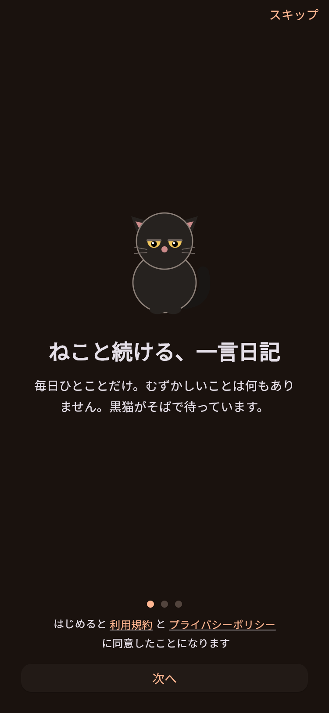
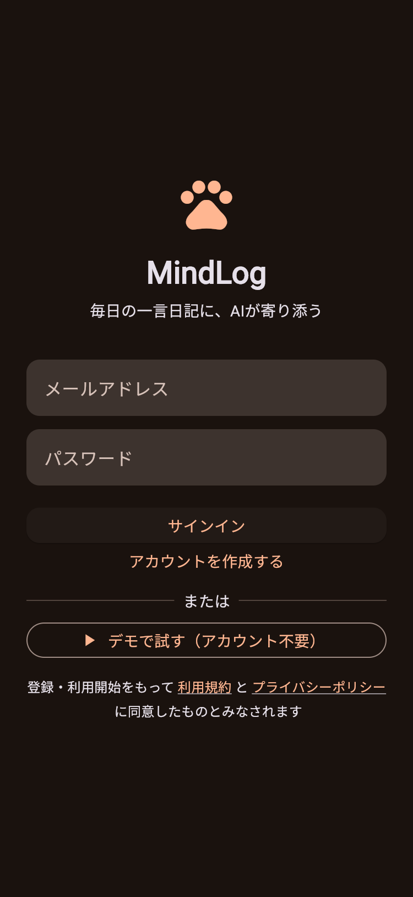
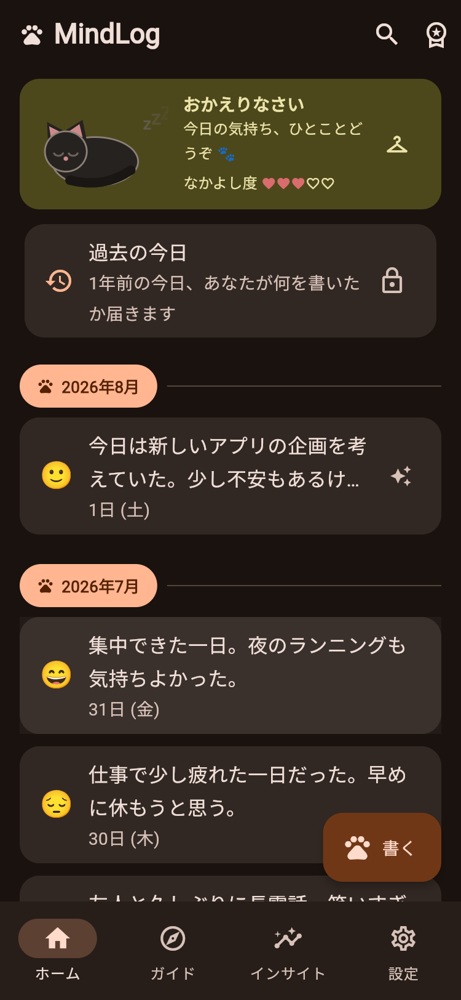
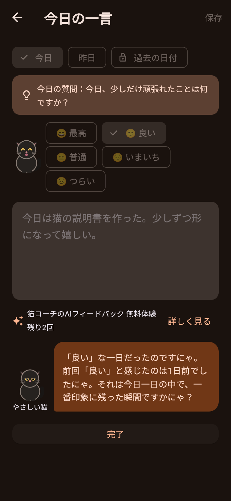
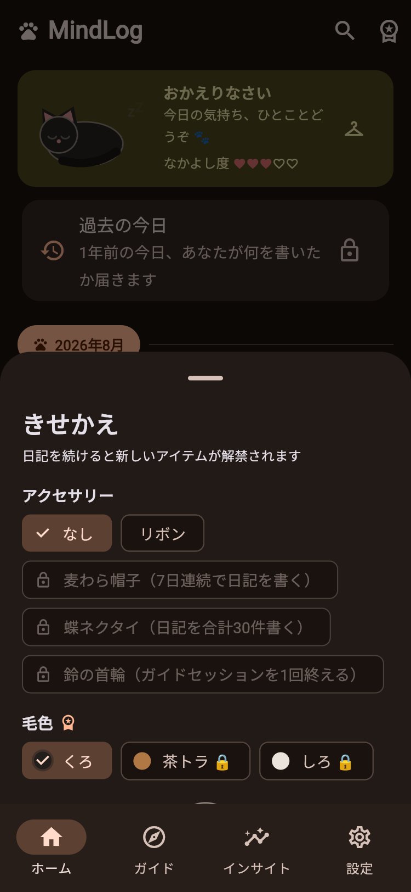
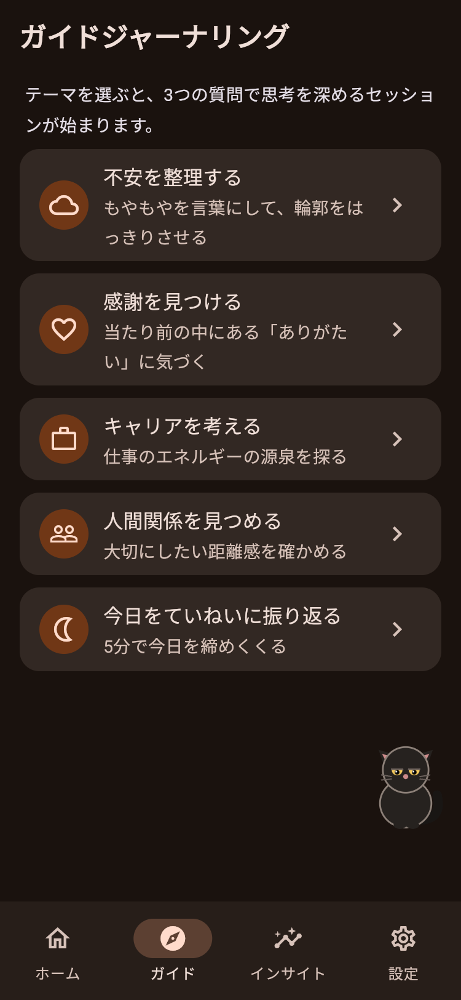
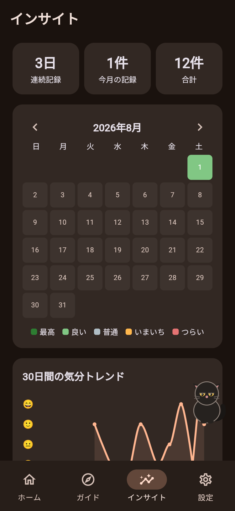
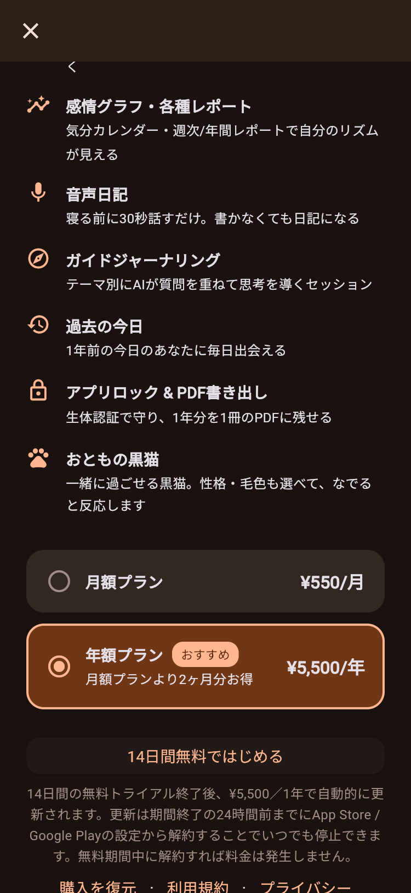
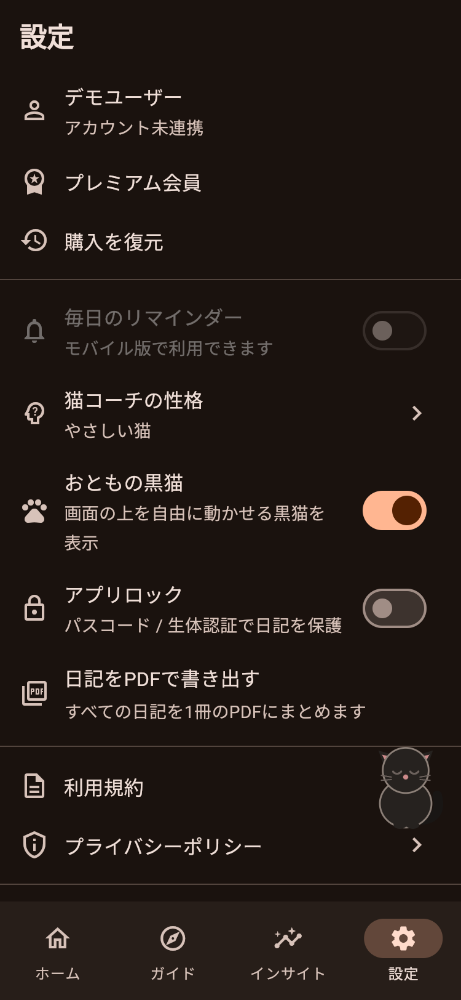

黒猫と続ける、ひとこと日記。
毎日ひとことだけ書く日記アプリです。書いた日記には、AIの猫コーチが「〜ですにゃ」と やさしく寄り添う質問や気づきを返してくれます。むずかしい操作はひとつもありません。 このページでは、実際の画面と一緒に使い方を紹介します。

最初の画面で「はじめる」を押すと、アカウントを作らなくてもすぐに日記を書けます。 猫コーチのお返事も3回まで無料で体験できます。
書いた日記を機種変更や再インストールのあとも残したいときは、設定の「アカウントを作成して日記を守る」から、 メールアドレス、または「Appleでサインイン」で無料のアカウントを作れます。日記はそのまま引き継がれます。

ホーム右下の「🐾 書く」ボタンを押すと、今日の日記が書けます。
保存すると、猫コーチがあなたの日記を読んで返事をくれます。 前に書いた日記のことも覚えていて、「前回『良い』と感じたのは◯日前でしたにゃ」のように さりげなく振り返ってくれます。AIフィードバックは無料で3回体験できます。


日記を続けるほど、ホームの黒猫との「なかよし度」が上がっていきます。 ホームで猫をタップするときせかえができ、 「7日連続で書く」「合計30件書く」などの達成でリボンや麦わら帽子が解禁されます。

プレミアムに登録すると、次の機能がすべて使えるようになります。


日記の記録・検索・きせかえはずっと無料で使えます。 プレミアムは月額550円または年額5,500円（2ヶ月分お得）で、 どちらも14日間の無料トライアルつきです。 無料期間中に解約すれば料金はかかりません。
解約はいつでも、アプリを入手したストアのサブスクリプション（定期購入）設定からできます。 iPhone / iPad では「設定」アプリ → ご自身の名前 →「サブスクリプション」です。


アカウントを作成してあれば消えません。同じアカウントでサインインすれば、日記はクラウドから自動で復元されます。アカウントを作らずに使っている場合は引き継げないので、機種変更の前に設定の「アカウントを作成して日記を守る」からアカウントを作成してください。
アプリを入手したストアのサブスクリプション（定期購入）設定からいつでも解約できます（iPhone / iPad では「設定」アプリ → ご自身の名前 →「サブスクリプション」）。解約後も次の更新日までプレミアム機能が使えます。
設定の「アカウントを削除」から、アカウントと日記データをすべて削除できます。
日記の内容はAIフィードバックの生成のためだけに使われ、AIの学習には使用されません。詳しくはプライバシーポリシーをご覧ください。